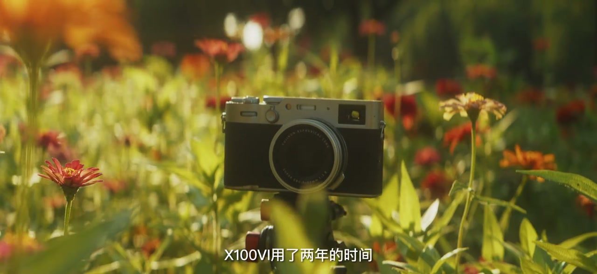
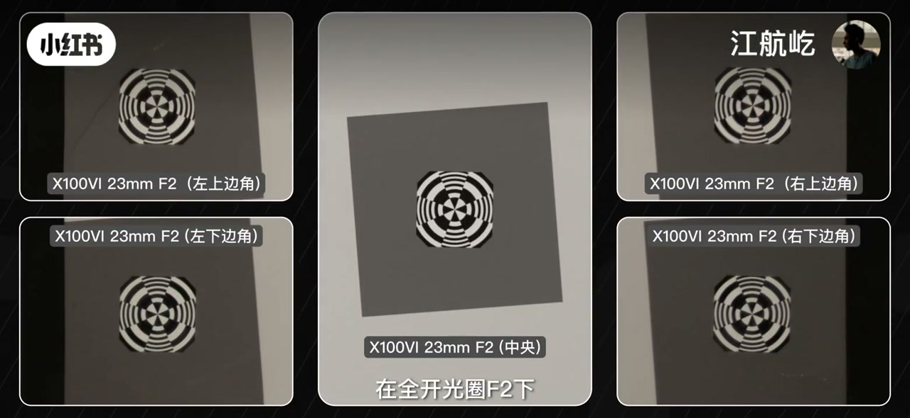
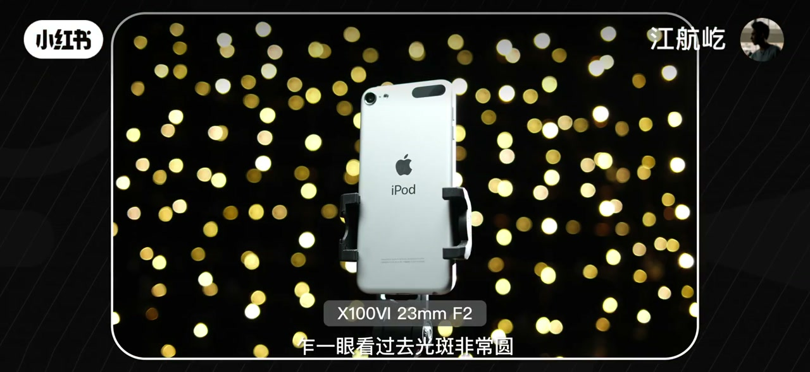
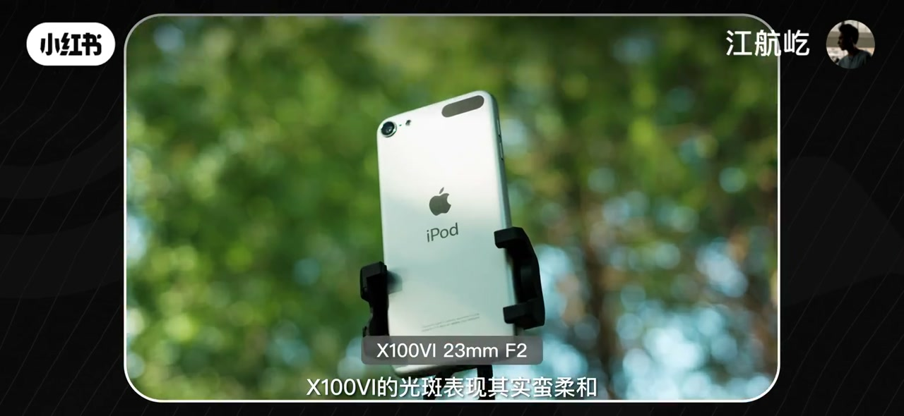
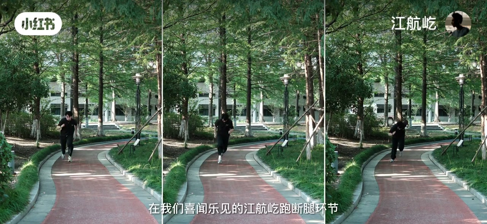
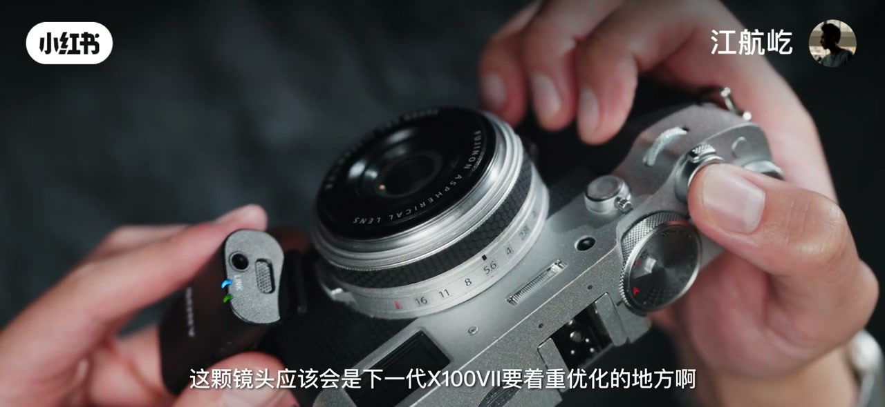

内容要点
UP 主「江航屹」用半年实拍回看富士 X100VI：溢价退去后，这台机更像「好玩」而不是单纯好用。口播覆盖解析力、最近对焦、焦外、色散与对焦；Whisper 常把机型听成「X160」、把焦外听成「郊外」，下文按画面铭牌与字幕校正。本地视频源约在 06:14 截断，胶片模拟深讲未收录。
知识结构
从「电子茅台」叙事回到日常手感；作者爱在光学/电子取景器间来回切换。
F2 全开谈不上锐，边角无崩边；极致锐度要约 F5.6–F8。日常够用，但相对五代未必更值得冲解析力升级。
最近对焦约 10cm，近极限明显柔光，微距不强。
全开圆斑偏「布丁」、有亮圈与二线性；F2.8 变多边形。实拍偏硬复古；喜好可参考美科 35mm F1.8 Pro。
轴向品红/绿色差与紫边可见，整体控制良好，不按 APO 标准苛求。
跑断腿连拍几乎无焦虑；外对焦有声响震动，作者预期下一代重点优化。胶片模拟话题刚起即源文件结束。
当作「好玩的复古直出旁轴味相机」回看更贴切：解析力日常够、焦外有性格、对焦已解放；别用实验室极限锐度或无声微距去衡量它。
00:00–02:37从电子茅台到好玩
标题把立场写死：聊真话、溢价退去后再谈值不值得回看。开场画面是机身躺在花草里，字幕写「用了半年」；接着作者坐在室内手持银黑机身口播，顶部拨盘与背面菜单被单独放大——强调曝光参数「一一对应」的机械手感。
口播把价值锚从「有用/好用」挪到「好玩」：每次拍摄都想打开取景器来回切换几次。中间约一分钟口播稀疏，画面继续做产品特写与菜单操作；标板段落之前，字幕已点出第六代机身、新传感器与处理器升级——为后面「升级感知不明显」埋钩子。

02:37–03:38解析力：全开一般，日常够用
进入「解析力需求」：实拍标板，全开 F2。即便保留机内锐化，作者仍觉得谈不上锐、相当一般；好消息是边角没有断崖式崩边，色散略明显。结论很直接——全开发挥不出新传感器全部实力。
收到 F2.8 锐度只略增；想要极致解析力，光圈可能得 F5.6 乃至 F8，边角表现才接近。作者称这有点尴尬：传感器升级了，日常感知却不明显；风光等必须小光圈的场景或许能体现，日常拍摄则「吃力不讨好」。
「实际用起来这个解析力我觉得完全够用，起码是谈不上肉的。只不过比起六代，X100V（五代）似乎会更有值得购买的理由。」
也就是说：够用 ≠ 冲着解析力升级；若只为更锐，五代仍可能更有性价比——这是作者个人购买判断，不是实验室结论。

03:38–03:48最近对焦与近距柔光
正面镜头最近对焦距离约 10 公分——不算近。靠近最近对焦时会出现明显柔光，作者总结微距能力总体不强。样张用窗边手持构图展示近距人像，参数条写着 X100VI 23mm F2。
03:48–05:12焦外光斑与复古硬味
焦外段落作者说「满惊喜」：一眼光斑很圆。完全没有口径蚀不现实，边角仍有猫眼变形，形状像「布丁」，比柠檬光斑观感更好。放大后光斑内部带弧——偏心同心圆；边缘有较明显亮圈，暗示一定二线性（洋葱圈倾向）。F2.8 时遗憾变成多边形，且几乎全屏，观感一般。
室内纵深有限，室外实拍更震撼：中央光斑偏柔，靠近边缘出现浮感「泡泡糖」风格。若喜欢这种味道又不用富士，作者随口提到可看美科 35mm F1.8 Pro（画面对照样张标注 A7R5 + MEIKE）。
高对比树叶边缘能看到二线性「做祟」。实拍焦外相对生硬——作者强调不是贬义：硬味复古，和富士主打的胶片模拟叙事统一，「一会儿再讲」（本地源在胶片模拟深讲前截断）。


05:12–05:31轴向色散与紫边
放大后仍可见品红或绿色轴向色散迹象。作者说没人会要求这么小的定焦达到 APO；这类色散反而挺适配复古画面。强光高对比细节有一定紫边，总体控制「撑得上良好」。
05:31–06:14对焦解放与外对焦代价
写进富士族谱的固定定焦，在 X100VI 上「完全解放」了新处理器的能力。经典「江航屹跑断腿」环节：多场景、多连拍速度，焦点一路跟到主体离开画面；视频实拍也基本没有对焦焦虑。
代价是：这么优雅的机身，对焦仍是外对焦，伴随一定声响与震动。作者认为这会是下一代 X100（七代）要着重优化的地方。收尾刚抛出「既然测到了富士，胶片模拟就是撇不开的话题」——本地音视频在此截断，后续未收录。
b64d.source.mp4 / b64d.m4a 可读长度约 6 分 14 秒（元数据标称更长但文件 partial），胶片模拟章节无法从本地证据还原。
